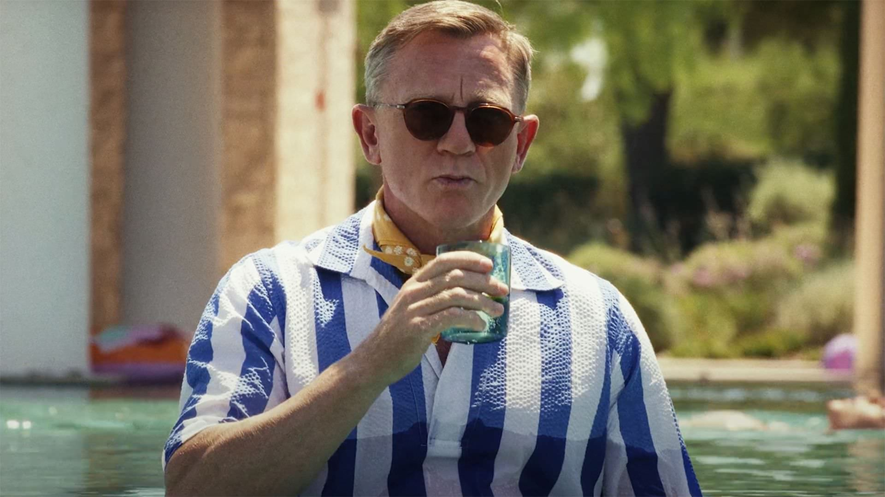

فیلم Glass Onion: A Knives Out Mystery با وجود اکران محدودی که در گیشه داشت، فروش بسیار درخشانی را تجربه کرده است.
پیش از پخش از نتفلیکس، فیلم Glass Onion: A Knives Out Mystery قرار است اکران کوتاه و محدودی را در سالنهای سینما تجربه کند و حالا طبق جدیدترین اخبار سینما و تلویزیون، دنباله فیلم Knives Out شروع درخشانی را در گیشه داشته است. فیلم Knives Out 2 روز چهارشنبه هفته گذشته اکران شد و طبق آمار منتشر شده، این فیلم جنایی در ۵ روز اول اکرانش ۱۳.۲۸۰ میلیون دلار در گیشه آمریکای شمالی فروش کرده است. نکته قابلتوجه این است که فیلم Glass Onion: A Knives Out Mystery تنها در ۶۹۶ سالن سینما نمایش داده شده و به این فروش درخشان در گیشه دست پیدا کرده است. فیلم Knives Out 2 در سه روز پایان هفته ۹.۴ میلیون دلار فروش کرده است و باعث شد تا این فیلم پس از فیلم Black Panther: Wakanda Forever و انیمیشن Strange World در رتبه سوم گیشه آمریکا در هفته گذشته قرار بگیرد. در هر حال بهنظر میرسد که فیلم Knives Out 2 بتواند به فروش ۱۵ میلیون دلار در طول ۷ روز اکران برسد.
برخی از استودیوها میگویند که فروش واقعی فیلم Glass Onion: A Knives Out Mystery در ۵ روز اول اکرانش کمتر از ۱۲ میلیون دلار است. در هر حال نتفلیکس هزینه زیادی برای خرید حق تولید و پخش دو قسمت آینده فیلم Knives Out پرداخت کرده است و موفقیت این فیلم جنایی میتواند نتفلیکس را تشویق کند تا فیلمهای بیشتری را در سالنهای سینما به نمایش در بیاورد تا از این طریق بتواند سود بیشتری را بهدست آورد. رایان جانسون، کارگردان و نویسنده فیلم Knives Out برای نوشتن فیلمنامه و کارگردانی فیلم Glass Onion: A Knives Out Mystery بازگشته است. دنیل کریگ در نقش بنوا بلنک، دیو باتیستا، ادوارد نورتون، کاترین هان، جنل مونی، کیت هادسن، لسلی اودم جونیور، جسیکا هنویک، مدلین کلاین، ایتن هاوک و جیدا پینکت اسمیت، از جمله بازیگرانی هستند که در فیلم Knives Out 2 حضور دارند و به ایفای نقش پرداختهاند. فیلم Knives Out 2 در تاریخ ۲۳ دسامبر (۲ دی) از شبکه نتفلیکس پخش خواهد شد. اتفاقات فیلم Glass Onion: A Knives Out Mystery در کشور یونان جریان دارد و بنوا بلنک با پرونده جنایی و مرموز جدیدی مواجه خواهد شد. همچنین فیلم Knives Out 3 در دست ساخت است که جانسون برای کارگردانی و نوشتن فیلمنامه بههمراه کریگ برای بازی در نقش بنوا بلنک در این فیلم نیز باز خواهند گشت.